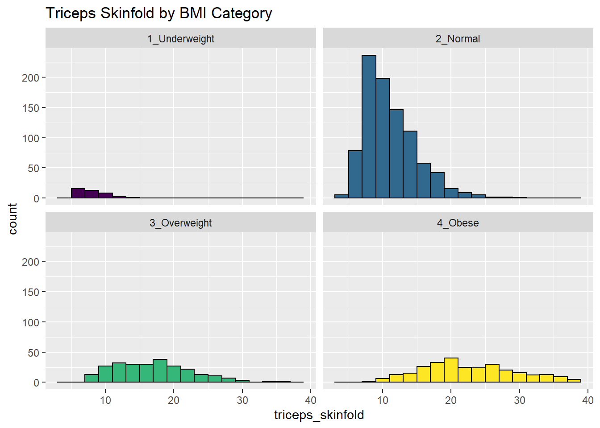
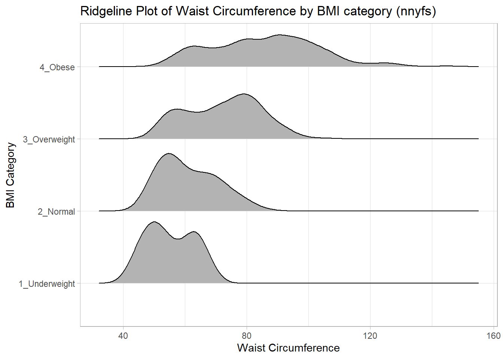

Chapter 10 Summarizing data within subgroups
10.1 Using dplyr and summarise to build a tibble of summary information
Suppose we want to understand how the subjects whose diet involved consuming much more than usual yesterday compare to those who consumer their usual amount, or to those who consumed much less than usual, in terms of the energy they consumed, as well as the protein. We might start by looking at the medians and means.
nnyfs %>%
group_by(diet_yesterday) %>%
select(diet_yesterday, energy, protein) %>%
summarise_all(funs(median, mean))Warning: funs() is soft deprecated as of dplyr 0.8.0
Please use a list of either functions or lambdas:
# Simple named list:
list(mean = mean, median = median)
# Auto named with `tibble::lst()`:
tibble::lst(mean, median)
# Using lambdas
list(~ mean(., trim = .2), ~ median(., na.rm = TRUE))
This warning is displayed once per session.# A tibble: 4 x 5
diet_yesterday energy_median protein_median energy_mean protein_mean
<chr> <dbl> <dbl> <dbl> <dbl>
1 1_Much more than u~ 2098 69.4 2150. 75.1
2 2_Usual 1794 61.3 1858. 67.0
3 3_Much less than u~ 1643 53.9 1779. 60.1
4 <NA> 4348 155. 4348 155. Perhaps we should restrict ourselves to the people who were not missing the diet_yesterday category, and look now at their sugar and water consumption.
nnyfs %>%
filter(complete.cases(diet_yesterday)) %>%
group_by(diet_yesterday) %>%
select(diet_yesterday, energy, protein, sugar, water) %>%
summarise_all(funs(median))# A tibble: 3 x 5
diet_yesterday energy protein sugar water
<chr> <dbl> <dbl> <dbl> <dbl>
1 1_Much more than usual 2098 69.4 137. 500
2 2_Usual 1794 61.3 114. 385.
3 3_Much less than usual 1643 53.9 115. 311.It looks like the children in the “Much more than usual” category consumed more energy, protein, sugar and water than the children in the other two categories. Let’s draw a picture of this.
library(patchwork)
temp_dat <- nnyfs %>%
filter(complete.cases(diet_yesterday)) %>%
mutate(diet_yesterday = fct_recode(diet_yesterday,
"Much more" = "1_Much more than usual",
"Usual diet" = "2_Usual",
"Much less" = "3_Much less than usual"))
p1 <- ggplot(temp_dat, aes(x = diet_yesterday, y = energy)) +
geom_violin() +
geom_boxplot(aes(fill = diet_yesterday), width = 0.2) +
theme_light() +
scale_fill_viridis_d() +
guides(fill = FALSE) +
labs(title = "Energy Comparison")
p2 <- ggplot(temp_dat, aes(x = diet_yesterday, y = protein)) +
geom_violin() +
geom_boxplot(aes(fill = diet_yesterday), width = 0.2) +
theme_light() +
scale_fill_viridis_d() +
guides(fill = FALSE) +
labs(title = "Protein Comparison")
p3 <- ggplot(temp_dat, aes(x = diet_yesterday, y = sugar)) +
geom_violin() +
geom_boxplot(aes(fill = diet_yesterday), width = 0.2) +
theme_light() +
scale_fill_viridis_d() +
guides(fill = FALSE) +
labs(title = "Sugar Comparison")
p4 <- ggplot(temp_dat, aes(x = diet_yesterday, y = water)) +
geom_violin() +
geom_boxplot(aes(fill = diet_yesterday), width = 0.2) +
theme_light() +
scale_fill_viridis_d() +
guides(fill = FALSE) +
labs(title = "Water Comparison")
p1 + p2 + p3 + p4We can see that there is considerable overlap in these distributions, regardless of what we’re measuring.
10.2 Another Example
Suppose now that we ask a different question. Do kids in larger categories of BMI have larger waist circumferences?
nnyfs %>%
group_by(bmi_cat) %>%
summarise(mean = mean(waist), sd = sd(waist),
median = median(waist),
skew_1 = round((mean(waist) - median(waist)) /
sd(waist),2))# A tibble: 5 x 5
bmi_cat mean sd median skew_1
<chr> <dbl> <dbl> <dbl> <dbl>
1 1_Underweight 55.2 7.58 54.5 0.09
2 2_Normal NA NaN NA NA
3 3_Overweight 72.3 11.9 74 -0.14
4 4_Obese NA NaN NA NA
5 <NA> NA NaN NA NA Oops. Looks like we need to filter for cases with complete data on both BMI category and waist circumference in order to get meaningful results. We should add a count, too.
nnyfs %>%
filter(complete.cases(bmi_cat, waist)) %>%
group_by(bmi_cat) %>%
summarise(count = n(), mean = mean(waist),
sd = sd(waist), median = median(waist),
skew_1 =
round((mean(waist) - median(waist)) / sd(waist),2))# A tibble: 4 x 6
bmi_cat count mean sd median skew_1
<chr> <int> <dbl> <dbl> <dbl> <dbl>
1 1_Underweight 41 55.2 7.58 54.5 0.09
2 2_Normal 917 61.2 9.35 59.5 0.19
3 3_Overweight 258 72.3 11.9 74 -0.14
4 4_Obese 294 85.6 17.1 86.8 -0.07Or, we could use something like favstats from the mosaic package, which automatically accounts for missing data, and omits it when calculating summary statistics within each group.
bmi_cat min Q1 median Q3 max mean sd n missing
1 1_Underweight 42.5 49.3 54.5 62.4 68.5 55.2 7.58 41 0
2 2_Normal 44.1 53.9 59.5 68.4 89.2 61.2 9.35 917 3
3 3_Overweight 49.3 62.3 74.0 81.2 105.3 72.3 11.94 258 0
4 4_Obese 52.1 72.7 86.8 96.8 144.7 85.6 17.11 294 1While patients in the heavier groups generally had higher waist circumferences, the standard deviations suggest there may be some meaningful overlap. Let’s draw the picture, in this case a comparison boxplot accompanying a violin plot.
nnyfs %>%
filter(complete.cases(bmi_cat, waist)) %>%
ggplot(., aes(x = bmi_cat, y = waist)) +
geom_violin() +
geom_boxplot(aes(fill = bmi_cat), width = 0.2) +
theme_light() +
scale_fill_viridis_d() +
guides(fill = FALSE) +
labs(title = "Waist Circumference by BMI Category")The data transformation with dplyr cheat sheet found under the Help menu in RStudio is a great resource. And, of course, for more details, visit Grolemund and Wickham (2019).
10.3 Boxplots to Relate an Outcome to a Categorical Predictor
Boxplots are much more useful when comparing samples of data. For instance, consider this comparison boxplot describing the triceps skinfold results across the four levels of BMI category.
ggplot(nnyfs, aes(x = bmi_cat, y = triceps_skinfold,
fill = bmi_cat)) +
geom_boxplot() +
scale_fill_viridis_d() +
theme_light()Warning: Removed 21 rows containing non-finite values (stat_boxplot).
Again, we probably want to omit those missing values (both in bmi_cat and triceps_skinfold) and also eliminate the repetitive legend (guides) on the right.
nnyfs %>%
filter(complete.cases(bmi_cat, triceps_skinfold)) %>%
ggplot(., aes(x = bmi_cat, y = triceps_skinfold,
fill = bmi_cat)) +
geom_boxplot() +
scale_fill_viridis_d() +
guides(fill = FALSE) +
theme_light() +
labs(x = "BMI Category", y = "Triceps Skinfold in mm",
title = "Triceps Skinfold increases with BMI category",
subtitle = "NNYFS children")
As always, the boxplot shows the five-number summary (minimum, 25th percentile, median, 75th percentile and maximum) in addition to highlighting candidate outliers.
10.3.1 Augmenting the Boxplot with the Sample Mean
Often, we want to augment such a plot, perhaps by adding a little diamond to show the sample mean within each category, so as to highlight skew (in terms of whether the mean is meaningfully different from the median.)
nnyfs %>%
filter(complete.cases(bmi_cat, triceps_skinfold)) %>%
ggplot(., aes(x = bmi_cat, y = triceps_skinfold,
fill = bmi_cat)) +
geom_boxplot() +
stat_summary(fun.y="mean", geom="point",
shape=23, size=3, fill="white") +
scale_fill_viridis_d() +
guides(fill = FALSE) +
theme_light() +
labs(x = "BMI Category", y = "Triceps Skinfold in mm",
title = "Triceps Skinfold increases with BMI category",
subtitle = "NNYFS children")
10.3.2 Adding Notches to a Boxplot
Notches are used in boxplots to help visually assess whether the medians of the distributions across the various groups actually differ to a statistically detectable extent Think of them as confidence regions around the medians. If the notches do not overlap, as in this situation, this provides some evidence that the medians in the populations represented by these samples may be different.
nnyfs %>%
filter(complete.cases(bmi_cat, triceps_skinfold)) %>%
ggplot(., aes(x = bmi_cat, y = triceps_skinfold,
fill = bmi_cat)) +
geom_boxplot(notch = TRUE) +
scale_fill_viridis_d() +
guides(fill = FALSE) +
theme_light() +
labs(x = "BMI Category", y = "Triceps Skinfold in mm",
title = "Triceps Skinfold increases with BMI category",
subtitle = "NNYFS children")
There is no overlap between the notches for each of the four categories, so we might reasonably conclude that the true median triceps skinfold values across the four categories are statistically significantly different.
For an example where the notches do overlap, consider the comparison of plank times by BMI category.
nnyfs %>%
filter(complete.cases(bmi_cat, plank_time)) %>%
ggplot(., aes(x=bmi_cat, y=plank_time, fill=bmi_cat)) +
geom_boxplot(notch=TRUE) +
scale_fill_viridis_d() +
guides(fill = "none") +
theme_light() +
labs(title = "Plank Times by BMI category",
x = "", y = "Plank Time (in seconds)")The overlap in the notches (for instance between Underweight and Normal) suggests that the median plank times in the population of interest don’t necessarily differ in a meaningful way by BMI category, other than perhaps the Obese group which may have a shorter time.
These data are somewhat right skewed. Would a logarithmic transformation in the plot help us see the patterns more clearly?
nnyfs %>%
filter(complete.cases(bmi_cat, plank_time)) %>%
ggplot(., aes(x=bmi_cat, y = log(plank_time), fill=bmi_cat)) +
geom_boxplot(notch=TRUE) +
scale_fill_viridis_d() +
guides(fill = "none") +
theme_light() +
labs(title = "log(Plank Times) by BMI category",
x = "", y = "Natural Log of Plank Time")10.4 Using Multiple Histograms to Make Comparisons
We can make an array of histograms to describe multiple groups of data, using ggplot2 and the notion of faceting our plot.
10.5 Using Multiple Density Plots to Make Comparisons
Or, we can make a series of density plots to describe multiple groups of data.
nnyfs %>%
filter(complete.cases(triceps_skinfold, bmi_cat)) %>%
ggplot(., aes(x=triceps_skinfold, fill = bmi_cat)) +
geom_density(color = "black") +
facet_wrap(~ bmi_cat) +
scale_fill_viridis_d() +
guides(fill = "none") +
labs(title = "Triceps Skinfold by BMI Category")
Or, we can plot all of the densities on top of each other with semi-transparent fills.
nnyfs %>%
filter(complete.cases(triceps_skinfold, bmi_cat)) %>%
ggplot(., aes(x=triceps_skinfold, fill = bmi_cat)) +
geom_density(alpha=0.3) +
scale_fill_viridis_d() +
labs(title = "Triceps Skinfold by BMI Category")This really works better when we are comparing only two groups, like females to males.
10.6 Building a Violin Plot
There are a number of other plots which compare distributions of data sets. An interesting one is called a violin plot. A violin plot is a kernel density estimate, mirrored to form a symmetrical shape.
nnyfs %>%
filter(complete.cases(triceps_skinfold, bmi_cat)) %>%
ggplot(., aes(x=bmi_cat, y=triceps_skinfold,
fill = bmi_cat)) +
geom_violin(trim=FALSE) +
scale_fill_viridis_d() +
guides(fill = "none") +
labs(title = "Triceps Skinfold by BMI Category")Traditionally, these plots are shown with overlaid boxplots and a white dot at the median, like this example, now looking at waist circumference again.
nnyfs %>%
filter(complete.cases(waist, bmi_cat)) %>%
ggplot(., aes(x = bmi_cat, y = waist,
fill = bmi_cat)) +
geom_violin(trim=FALSE) +
geom_boxplot(width=.1, outlier.colour=NA,
color = c(rep("white",2), rep("black",2))) +
stat_summary(fun.y=median, geom="point",
fill="white", shape=21, size=3) +
scale_fill_viridis_d() +
guides(fill = "none") +
labs(title = "Waist Circumference by BMI Category")10.7 A Ridgeline Plot
Some people don’t like violin plots - for example, see https://simplystatistics.org/2017/07/13/the-joy-of-no-more-violin-plots/. A relatively new alternative plot is available. This shows the distribution of several groups simultaneously, especially when you have lots of subgroup categories, and is called a ridgeline plot8.
nnyfs %>%
filter(complete.cases(waist, bmi_cat)) %>%
ggplot(., aes(x = waist, y = bmi_cat, height = ..density..)) +
ggridges::geom_density_ridges(scale = 0.85) +
theme_light() +
labs(title = "Ridgeline Plot of Waist Circumference by BMI category (nnyfs)",
x = "Waist Circumference", y = "BMI Category")Picking joint bandwidth of 3.47And here’s a ridgeline plot for the triceps skinfolds. We’ll start by sorting the subgroups by the median value of our outcome (triceps skinfold) in this case, though it turns out not to matter. We’ll also add some color.
nnyfs %>%
filter(complete.cases(bmi_cat, triceps_skinfold)) %>%
mutate(bmi_cat = fct_reorder(bmi_cat,
triceps_skinfold,
.fun = median)) %>%
ggplot(., aes(x = triceps_skinfold, y = bmi_cat,
fill = bmi_cat, height = ..density..)) +
ggridges::geom_density_ridges(scale = 0.85) +
scale_fill_viridis_d(option = "magma") +
guides(fill = FALSE) +
labs(title = "Ridgeline Plot of Triceps Skinfold by BMI Category (nnyfs)",
x = "Triceps Skinfold", y = "BMI Category") +
theme_light()Picking joint bandwidth of 1.37
For one last example, we’ll look at age by BMI category, so that sorting the BMI subgroups by the median matters, and we’ll try an alternate color scheme, and a theme specially designed for the ridgeline plot.
nnyfs %>%
filter(complete.cases(bmi_cat, age_child)) %>%
mutate(bmi_cat = reorder(bmi_cat, age_child, median)) %>%
ggplot(aes(x = age_child, y = bmi_cat, fill = bmi_cat, height = ..density..)) +
ggridges::geom_density_ridges(scale = 0.85) +
scale_fill_brewer(palette = "YlOrRd") +
guides(fill = FALSE) +
labs(title = "Ridgeline Plot of Age at Exam by BMI category (nnyfs)",
x = "Age of Child at Exam", y = "BMI Category") +
ggridges::theme_ridges()Picking joint bandwidth of 1.15
References
Grolemund, Garrett, and Hadley Wickham. 2019. R for Data Science. O’Reilly. http://r4ds.had.co.nz/.
These were originally called joy plots, and the tools were contained in the
ggjoypackage but that name and package has been deprecated in favor ofggridges.↩